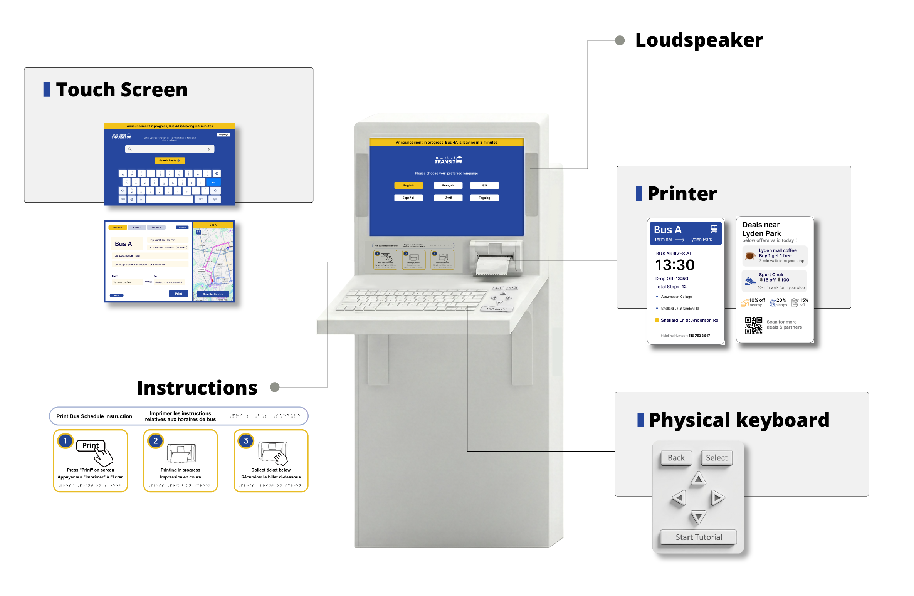
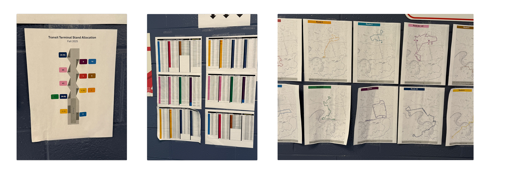
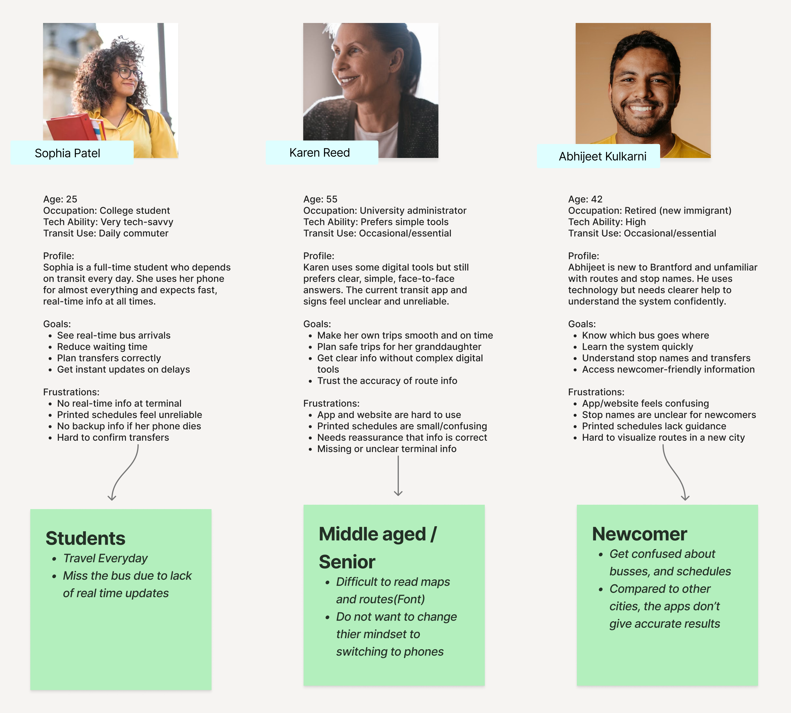
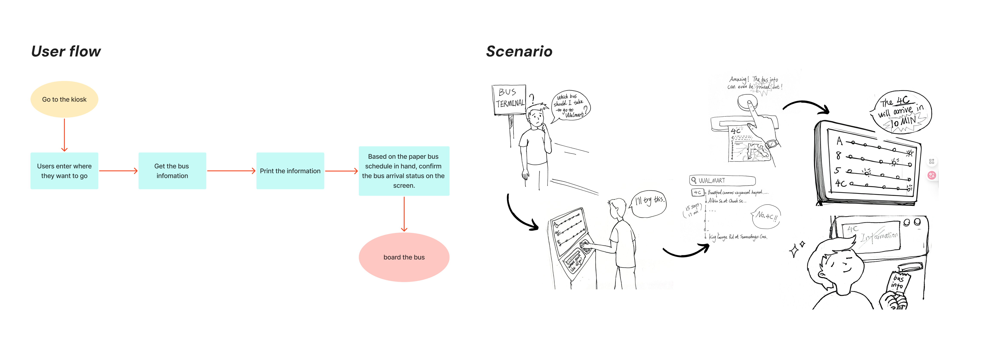
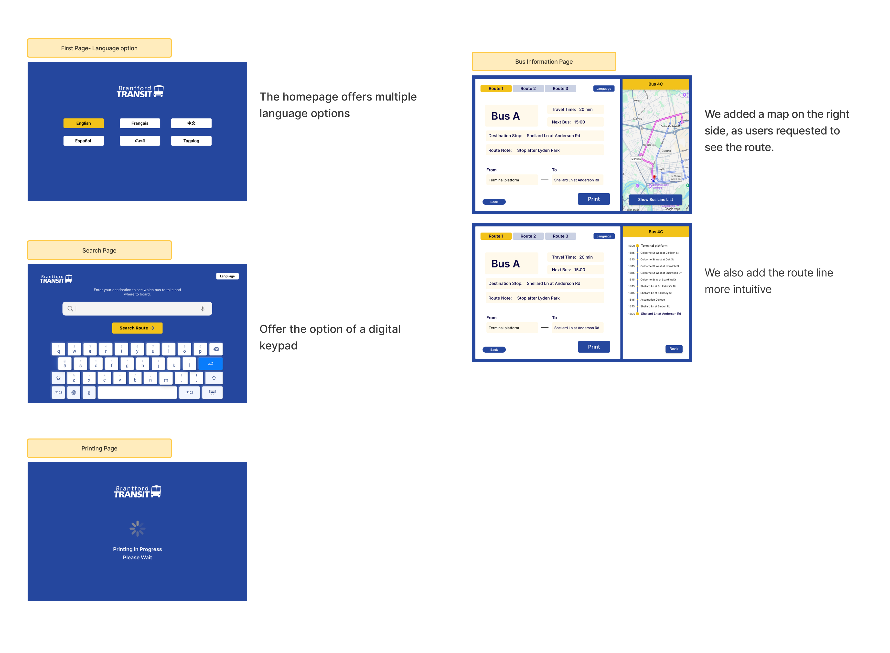
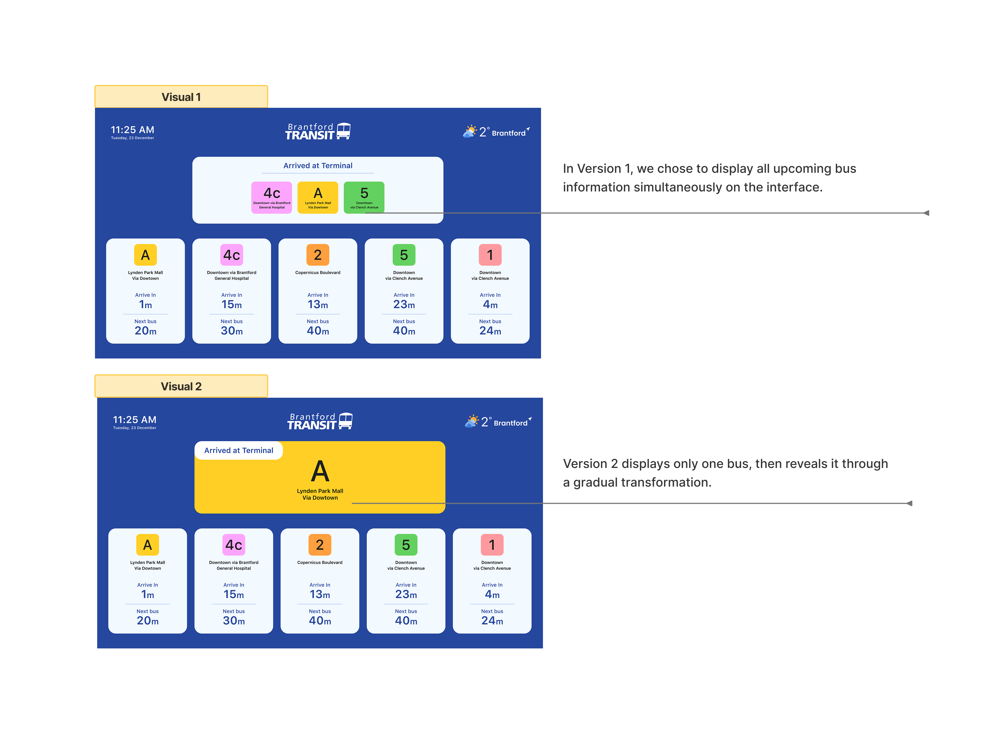
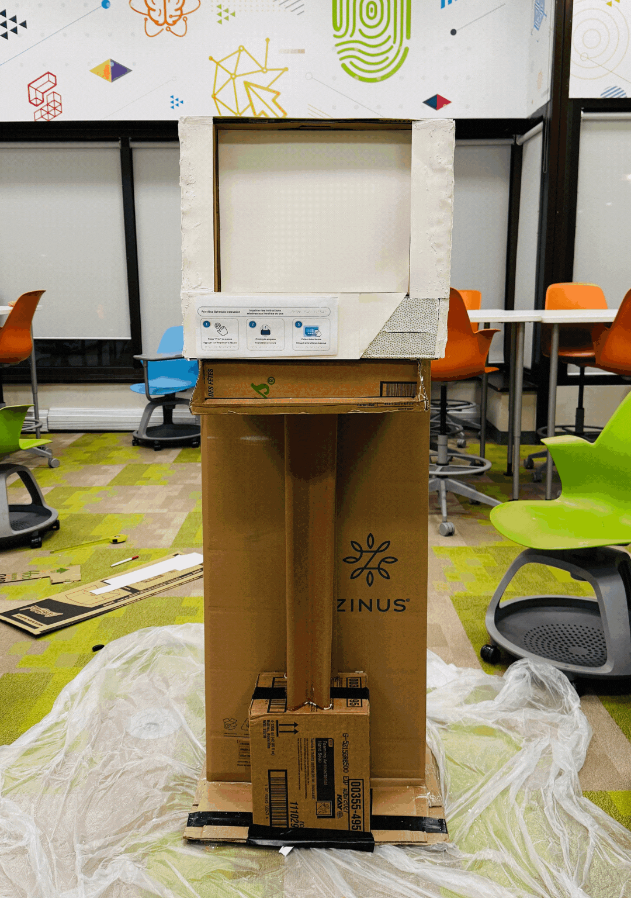
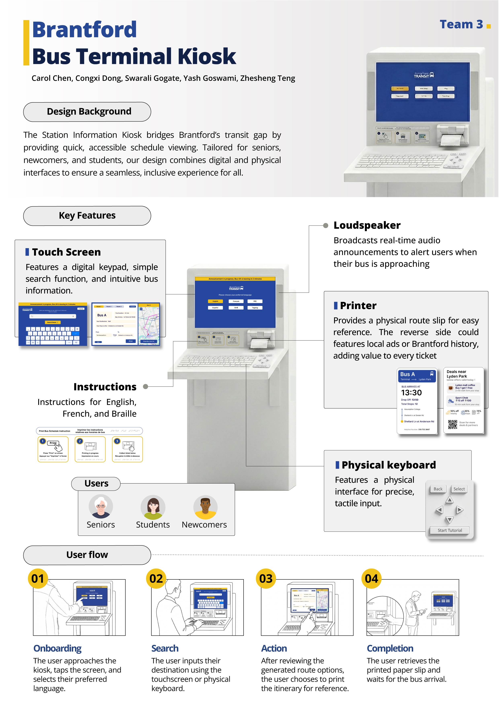
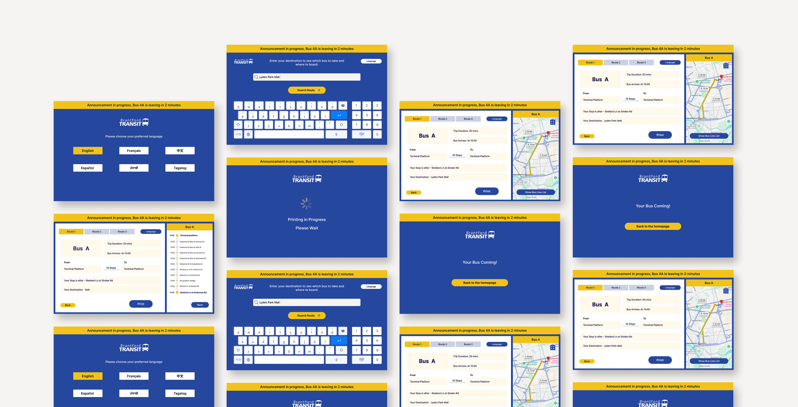

Overview
01This project was a 4-month collaboration with Brantford Transit to tackle the digital divide in public transportation. Our goal was to create a kiosk that combines the convenience of digital search with the tactile experience of the physical world.
The transportation department confirmed that 10% of passengers do not use smartphones — creating a gap in accessibility that no existing solution addressed.
Our solution integrates three core features: a printable itinerary, multimodal input (touchscreen + physical keyboard), and multilingual support for 6 languages — meeting Brantford's ICF goals for digital inclusion and public innovation.

The Problem
02Commuters in Brantford often struggle to find accurate and clear bus information. During field research, a clear pattern emerged — the system failed two groups entirely.
While younger students confidently checked their phones, many seniors and newcomers walked straight past the information wall to ask the ticket booth staff.
I cannot read the maps on the wall.
I don't want to buy internet just to use the bus app.
The Digital Gap: Real-time info required smartphones and data plans, excluding those without tech access.

Goal
03Design an inclusive, accessible, and easy-to-use bus information kiosk that helps all riders quickly obtain route information — without a smartphone.
Printable Itinerary
A thermal printer provides a physical receipt with departure times, stop list, and alighting reminders.
Multimodal Input
Touchscreen input alongside a physical keyboard, catering to both digital natives and analogue users.
Multilingual Support
Language selection on the welcome screen, buried in settings, to support Brantford's diverse communities.
Research & Discovery
04Instead of relying solely on data, we spent a full day at the Brantford Transit Terminal. We conducted 17 intercept interviews and observed passenger behaviors during peak and off-peak hours.
We identified three distinct user groups, each facing a unique barrier to entry:

Ideation
05Based on early observations, we centered solutions around the bus shelter kiosk. After presenting concept ideas to our mentor, we narrowed our focus to a "phygital" product integrating physical and digital experiences.



Guerilla Testing
06We took paper prototypes directly to the bus terminal. This "fail fast" approach immediately exposed three critical friction points our initial assumptions had missed.

Multilingual Needs Buried
Keyboard Hesitation
Visual Confusion vs. Tactile Confirmation

Mid-Fidelity Design
07Based on guerilla testing findings, we built mid-fidelity prototypes and verified the full ecosystem — how users switched between the physical keyboard and screen.



Usability Testing 2
07.1Second round of usability testing with 13 participants — students, seniors, newcomers, and non-tech users. Three key findings shaped Version 2.0.

Static Map Confusion
TV Screen Ignored
Itinerary Uncertainty
High-Fidelity Design
08Version 2.0 addressed every major friction point. Here's what changed:
- Interactive Map with zoom/drag capability for intuitive navigation.
- Plain language labels, removing technical jargon.
- Precise arrival times and stop counts displayed early.
- Braille stickers and audio output for visually impaired users.
- Simplified system, removing the external TV screen.
- Redesigned Printable Card focusing on legibility and key data.



Implementation & ICF Alignment
09Digital Inclusion
Directly supports Brantford's ICF goals by providing digital access to the 10% of riders without smartphones.
Low-Cost Deployment
Can be installed using existing Ticket Vending Machine hardware shells, minimizing infrastructure costs.
Low Maintenance
Integrates with existing real-time data API. Only paper for receipts requires regular maintenance.
Reflection
10User-Centred Design Requires Continuous Iteration
We learned that our first idea is rarely the best one. Removing the external TV screen, which users completely ignored, taught us that good design is often about subtracting what doesn’t add value.
Real-World Testing Reveals Insights Interviews Cannot
In the classroom, our prototype made sense. But in the busy bus terminal, we saw behaviors interviews missed, like users trusting physical maps over screens. Context changes everything.
Accessibility Must Be Designed from the Start
Seeing seniors bypass the touchscreen for the physical keyboard proved that accessibility isn’t an “add-on.” For inclusivity to work, it has to be part of the foundation, not an afterthought.
Mixed Physical–Digital Solutions Are Powerful
In a world racing towards “digital-only,” we found that physical elements still matter. The printed ticket and tactile keyboard provided a sense of security and trust that a screen alone could not match.